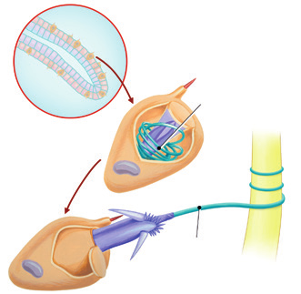

Animales acuáticos como las medusas, los corales y las anémonas de mar pertenecen a este grupo. Las medusas son de vida libre, mientras que los corales y las anémonas viven fijas al sustrato.
El cuerpo de los cnidarios
Según la forma que adopta su cuerpo, se dividen en pólipos y medusas. Presentan simetría radial, con una o varias coronas de tentáculos alrededor de un orificio que funciona como boca y ano.
Anémona de marMedusa en movimiento
Las funciones vitales de los cnidarios
La respiración de los cnidarios es cutánea. La mayoría son carnívoros y unos depredadores muy eficaces. Las presas pasan de la boca al interior de un aparato digestivo con forma de saco, llamado cavidad gastrovascular.
Sus tentáculos tienen células urticantes, los cnidoblastos, con los que paralizan a sus presas. Están formadas por una cápsula de líquido urticante y un filamento con púas que se enrolla en su interior. Este filamento sale disparado al exterior cuando es estimulado por la presa.
La reproducción en los pólipos puede ser asexual por gemación o sexual; en las medusas, suele ser sexual.
Tienen órganos sensoriales muy rudimentarios, relacionados con la visión y el equilibrio.

Ilustración de un procedimiento médicoPólipos de coralArrecife de coral vibrante